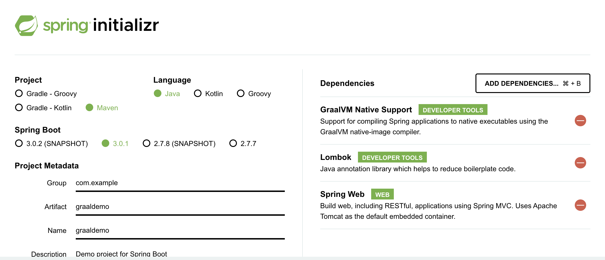
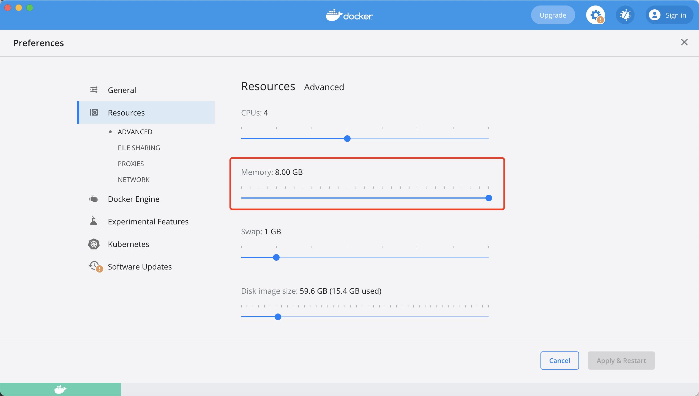

简介
GraalVM可以把java应用编译成可直接执行的镜像，占用内存更小，启动速度更快，它可以使java应用不依赖JVM运行
hello world
前置条件
docker jdk17 maven
相关代码
工程结构使用spring.io生成即可

java代码
@RestController
@SpringBootApplication
public class GraaldemoApplication {
@RequestMapping("/")
String home() {
return "Hello World!";
}
public static void main(String[] args) {
SpringApplication.run(GraaldemoApplication.class, args);
}
}
parent pom配置
<?xml version="1.0" encoding="UTF-8"?>
<project xmlns="http://maven.apache.org/POM/4.0.0" xmlns:xsi="http://www.w3.org/2001/XMLSchema-instance"
xsi:schemaLocation="http://maven.apache.org/POM/4.0.0 https://maven.apache.org/xsd/maven-4.0.0.xsd">
<modelVersion>4.0.0</modelVersion>
<parent>
<groupId>org.springframework.boot</groupId>
<artifactId>spring-boot-starter-parent</artifactId>
<version>3.0.0</version>
<relativePath/> <!-- lookup parent from repository -->
</parent>
<groupId>com.example</groupId>
<artifactId>graaldemo</artifactId>
<version>0.0.1-SNAPSHOT</version>
<name>graaldemo</name>
<description>Demo project for Spring Boot</description>
<properties>
<java.version>17</java.version>
</properties>
<dependencies>
<dependency>
<groupId>org.springframework.boot</groupId>
<artifactId>spring-boot-starter-web</artifactId>
</dependency>
<dependency>
<groupId>org.projectlombok</groupId>
<artifactId>lombok</artifactId>
<optional>true</optional>
</dependency>
<dependency>
<groupId>org.springframework.boot</groupId>
<artifactId>spring-boot-starter-test</artifactId>
<scope>test</scope>
</dependency>
</dependencies>
<build>
<plugins>
<plugin>
<groupId>org.graalvm.buildtools</groupId>
<artifactId>native-maven-plugin</artifactId>
</plugin>
<plugin>
<groupId>org.springframework.boot</groupId>
<artifactId>spring-boot-maven-plugin</artifactId>
<configuration>
<excludes>
<exclude>
<groupId>org.projectlombok</groupId>
<artifactId>lombok</artifactId>
</exclude>
</excludes>
</configuration>
</plugin>
</plugins>
</build>
</project>
镜像打包
mvn -Pnative spring-boot:build-image
过程十分漫长，并且注意docker内存需要设置8G，不然构建过程可能报错

运行镜像
docker run --rm -p 8080:8080 docker.io/library/graaldemo:0.0.1-SNAPSHOT